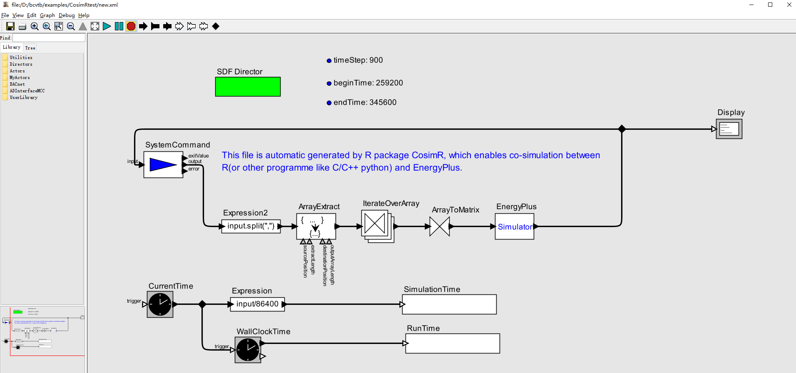

Generate,modify and save the xml file for co-simualtion between external program (R,python or C/C++) and EnergyPlus through the BCVTB
CosimR provides the minimum implementation for co-simulation between external program (R,python or C/C++) and EnergyPlus through the SystemCommand Acotr of BCVTB. CosimR can help you to generate(copy), modify and save a xml file, which will be used in the co-simulation. Meanwhile, CosimR also provides a simple function to run the co-simulation through command line of BCVTB.

Done:
Plan:
As for more diffcult operations, you need adjust your IDF and external scripts according to your needs.
The flowchart:
Step1:Copy Step2:Modify Step3:save/write Step4: run
xml file =========>>> '.../CosimR.xml' =========>>> xmlroot =========>>> '.../new.xml' =========>>> result
copy_xml() modify_xml() write_xml() run_Cosim()We need prepare some files for co-simulation. All files have been placed in the package. Therefore, just copy them to your target path.
Note: All the file.copy operations are not necessary for co-simulation if you already have your own idf, cfg, R or python script,and so on. These copy is just for the reproduction of schedule example which is provided in BCVTB.
# This xmlpath is my case. Change it according to your need.
# The idf version is V8-5-0.
xmlpath <- 'D:/bcvtb/examples/CosimRtest'
file.copy(from = system.file("extdata/SmOffPSZ.idf", package = "CosimR"),
to = xmlpath,
overwrite = TRUE)
file.copy(from = system.file("extdata/variables.cfg", package = "CosimR"),
to = xmlpath,
overwrite = TRUE)xmlroot<- modify_xml(xmlpath = xmlpath,
timeStep = 15*60, # '15*60' is more recommended than 15*60
beginTime = 3*24*3600,
endTime = 4*24*3600,
extractLength = 2,
idf = paste0(xmlpath,'/SmOffPSZ.idf'),
epw = 'D:/bcvtb/examples/ePlusWeather/USA_IL_Chicago-OHare.Intl.AP.725300_TMY3.epw',
outname = 'eplusout',
programname = 'Rscript',
programArgs = 'Cosim.R',
workingDir = paste0(xmlpath,'/R'),
cpp = FALSE)## Part1: Cosim time set modify >>>>>>>>>## timeStep: 900 beginTime: 259200 endTime: 345600## Part2: ArrayExtract actor pram.args modify >>>>>>>>>## extractLength: 2 outputArrayLength: 2## Part3: EnergyPlus Simulator pram.args modify >>>>>>>>>## energyplus command: " -w D:/bcvtb/examples/ePlusWeather/USA_IL_Chicago-OHare.Intl.AP.725300_TMY3.epw -p eplusout -s C -x -m -r D:/bcvtb/examples/CosimRtest/SmOffPSZ.idf "## Part4: SystemCommand pram.args modify >>>>>>>>>## programname: Rscript
## programArgs: "D:/bcvtb/examples/CosimRtest/R/Cosim.R $input $time $iteration"
## workingDir: D:/bcvtb/examples/CosimRtest/R
## simulationLog: D:/bcvtb/examples/CosimRtest/R/simulation.log## ---------------- Modification End ----------------The Cosim.R is also included in the CosimR package.
## new.xml is written successfully!Now, you can operate the new.xml by BCVTB.
You can use this part to replace above corresponding R code chunks.
xmlroot<- modify_xml(xmlpath = xmlpath,
timeStep = 15*60,
beginTime = 3*24*3600,
endTime = 4*24*3600,
extractLength = 2,
idf = paste0(xmlpath,'/SmOffPSZ.idf'),
epw = 'D:/bcvtb/examples/ePlusWeather/USA_IL_Chicago-OHare.Intl.AP.725300_TMY3.epw',
outname = 'eplusout',
programname = 'python',
programArgs = 'Cosim.py',
workingDir = paste0(xmlpath,'/python'),
cpp = FALSE)
file.copy(from = system.file("extdata/Cosim.py", package = "CosimR"),
to = paste0(xmlpath,'/python'),
overwrite = TRUE)Use this part to replace above corresponding code chunks.
xmlroot<- modify_xml(xmlpath = xmlpath,
timeStep = 15*60,
beginTime = 3*24*3600,
endTime = 4*24*3600,
extractLength = 2,
idf = paste0(xmlpath,'/SmOffPSZ.idf'),
epw = 'D:/bcvtb/examples/ePlusWeather/USA_IL_Chicago-OHare.Intl.AP.725300_TMY3.epw',
outname = 'eplusout',
programname = 'D:/bcvtb/examples/CosimRtest/cpp/Cosim',
programArgs = '',
workingDir = paste0(xmlpath,'/cpp'),
cpp = TRUE)
#window user can use exe
#linux and other OS user can compile the Cosim.cpp
file.copy(from = system.file("extdata/Cosim.exe", package = "CosimR"),
to = paste0(xmlpath,'/cpp'),
overwrite = TRUE)